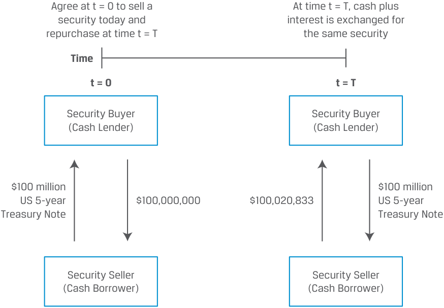
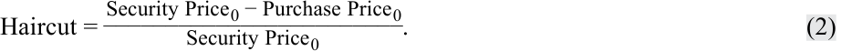
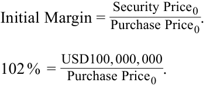
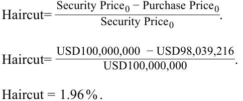
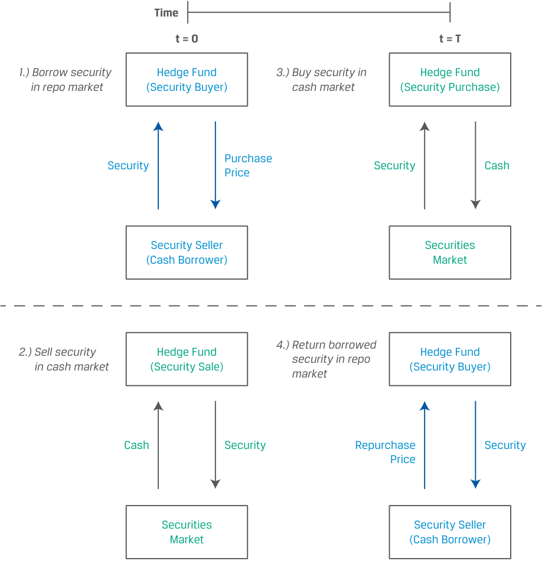
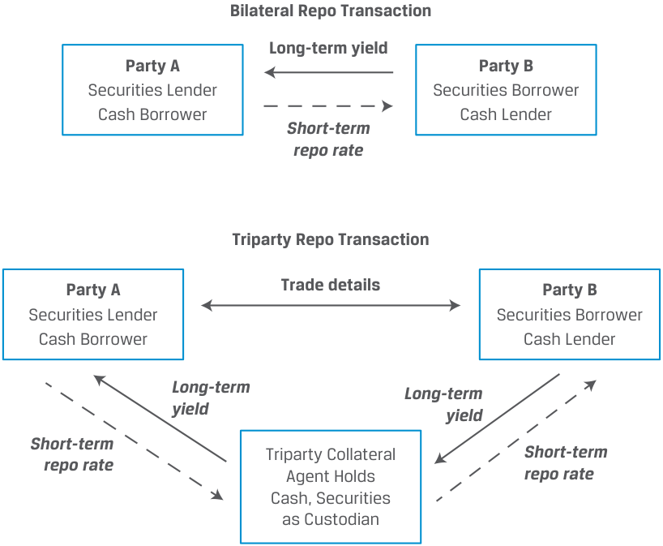
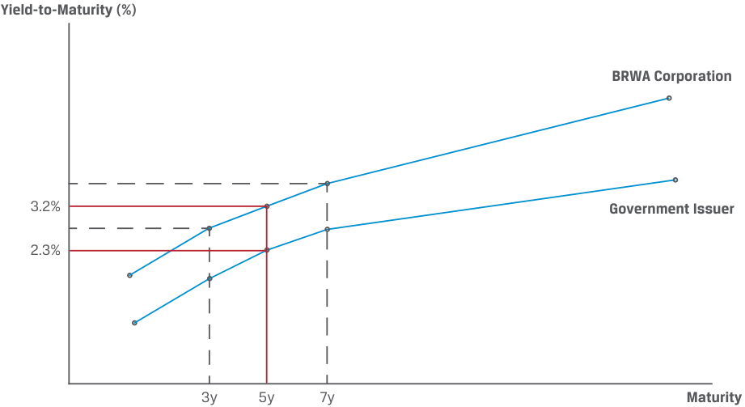
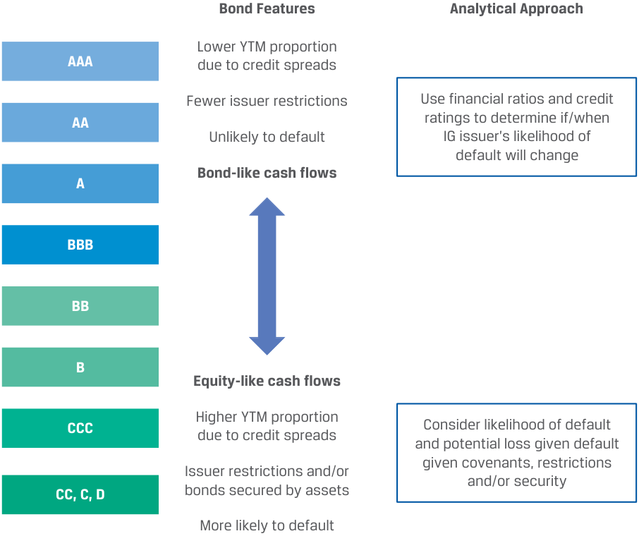
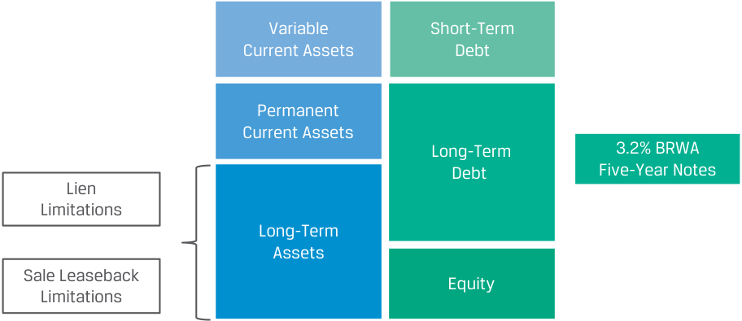
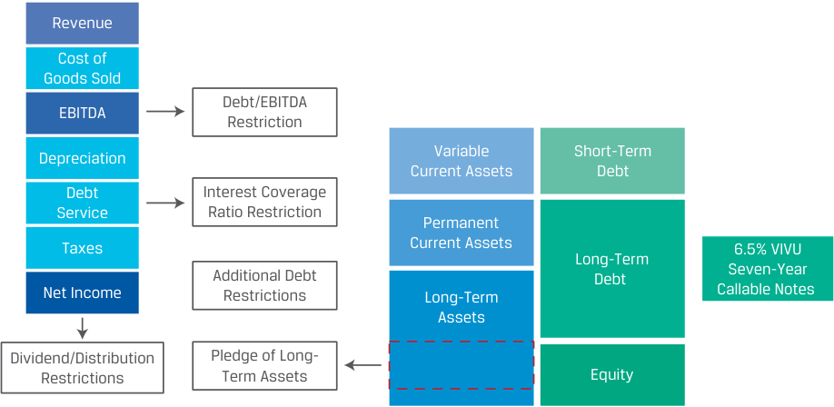

Learning Module 4 Fixed-Income Markets for Corporate Issuers - Part 2: Repurchase Agreements
Volume 6: Fixed Income
Learning Module 4 Fixed-Income Markets for Corporate Issuers
Part 2/3: Repurchase Agreements (PDF Pages 98–113)
Tập 6: Chứng Khoán Thu Nhập Cố Định (Fixed Income)
Học Phần 4: Thị Trường Thu Nhập Cố Định Cho Các Tổ Chức Phát Hành Doanh Nghiệp (Fixed-Income Markets for Corporate Issuers)
Phần 2/3: Hợp Đồng Mua Lại (Trang PDF 98–113)
-
C. Liquidity enhancement
-
Solution:
-
C. Tăng cường thanh khoản (Liquidity enhancement)
-
Lời giải:
C is correct. To minimize rollover risk, investors usually require a liquidity enhancement to ensure that the issuer can fully repay maturing commercial paper if a rollover is not possible. B is incorrect because bridge financing, which is interim financing that provides funds until permanent financing can be arranged, would require additional issuance of commercial paper by the issuer, increasing rollover risk. A is incorrect because a credit rating does not affect rollover risk.
C là đáp án đúng. Để giảm thiểu rủi ro đảo nợ (rollover risk), các nhà đầu tư thường yêu cầu một biện pháp tăng cường thanh khoản (liquidity enhancement – hạn mức tín dụng dự phòng) để đảm bảo rằng tổ chức phát hành có thể hoàn trả đầy đủ thương phiếu đáo hạn nếu việc đảo nợ không thể thực hiện được. B không đúng vì tài trợ bắc cầu, vốn là khoản tài trợ tạm thời cung cấp vốn cho đến khi nguồn tài trợ dài hạn/vĩnh viễn có thể được thu xếp, sẽ đòi hỏi việc phát hành thêm thương phiếu của tổ chức phát hành, làm tăng rủi ro đảo nợ. A không đúng vì xếp hạng tín dụng không trực tiếp loại bỏ rủi ro đảo nợ.
- Which of the following statements about asset-backed commercial paper is correct?
-
A. This financing is not recorded on the balance sheet of the issuer.
-
B. The bank issues ABCP to investors with a backup credit liquidity line provided by the SPE.
-
C. Investors purchase an illiquid, short-term note with interest and principal payments from the SPE.
-
Solution:
- Phát biểu nào sau đây về thương phiếu đảm bảo bằng tài sản (asset-backed commercial paper – ABCP) là đúng?
-
A. Khoản tài trợ này không được ghi nhận trên bảng cân đối kế toán của tổ chức phát hành (ngân hàng khởi tạo).
-
B. Ngân hàng phát hành ABCP cho các nhà đầu tư kèm theo một hạn mức thanh khoản tín dụng dự phòng do SPE cung cấp.
-
C. Các nhà đầu tư mua một kỳ phiếu ngắn hạn, kém thanh khoản với các khoản thanh toán lãi và vốn gốc từ SPE.
-
Lời giải:
A is correct. This financing is not recorded on the balance sheet of the issuer. B is incorrect because the SPE (not the bank) issues ABCP to investors with a backup credit liquidity line provided by the bank. C is incorrect because investors purchase a liquid , short-term note from the SPE.
A là đáp án đúng. Khoản tài trợ này không được ghi nhận trên bảng cân đối kế toán của tổ chức phát hành. B không đúng vì SPE (chứ không phải ngân hàng) phát hành ABCP cho các nhà đầu tư kèm theo một hạn mức thanh khoản tín dụng dự phòng do ngân hàng cung cấp. C không đúng vì các nhà đầu tư mua một kỳ phiếu ngắn hạn, có tính thanh khoản (liquid) từ SPE.
3 REPURCHASE AGREEMENTS
3 HỢP ĐỒNG MUA LẠI (REPURCHASE AGREEMENTS)
describe repurchase agreements (repos), their uses, and their benefits and risks
Mục tiêu: Mô tả các hợp đồng mua lại (repos), công dụng của chúng, cũng như các lợi ích và rủi ro của chúng.
An important source of secured short-term lending and borrowing is the repurchase agreement (repo) market. A repurchase agreement , or repo, involves the sale of a security with a simultaneous agreement by the seller to buy the same (or a similar) security back from the purchaser at an agreed-on repurchase price and future date called the repurchase date . Exhibit 4 shows the mechanics of a simple repurchase agreement.
Một nguồn cho vay và đi vay ngắn hạn có đảm bảo quan trọng là thị trường hợp đồng mua lại (repurchase agreement – repo). Một hợp đồng mua lại (repurchase agreement hay repo) bao gồm việc bán một chứng khoán kèm theo một thỏa thuận đồng thời của bên bán sẽ mua lại chính chứng khoán đó (hoặc một chứng khoán tương tự) từ bên mua ở một mức giá mua lại (repurchase price) đã thỏa thuận vào một ngày trong tương lai được gọi là ngày mua lại (repurchase date). Bảng minh họa 4 (Exhibit 4) cho thấy cơ chế hoạt động của một hợp đồng mua lại đơn giản.
Exhibit 4: Repurchase Agreement
Bảng minh họa 4: Hợp đồng Mua lại (Repurchase Agreement)

Chú thích hình ảnh: - Tại thời điểm $t = 0$: Thỏa thuận tại $t = 0$ bán một chứng khoán ngày hôm nay và mua lại tại thời điểm $t = T$: - Bên bán chứng khoán / Bên vay tiền mặt (Security Seller / Cash Borrower) giao 100 triệu USD Trái phiếu Kho bạc Hoa Kỳ kỳ hạn 5 năm ($100 million US 5-year Treasury Note) cho Bên mua chứng khoán / Bên cho vay tiền mặt (Security Buyer / Cash Lender). - Bên mua chứng khoán / Bên cho vay tiền mặt thanh toán $100,000,000\text{ USD}$ tiền mặt cho Bên bán chứng khoán / Bên vay tiền mặt. - Tại thời điểm $t = T$: Tiền mặt cộng với tiền lãi được trao đổi để lấy lại chính chứng khoán đó: - Bên mua chứng khoán / Bên cho vay tiền mặt hoàn trả 100 triệu USD Trái phiếu Kho bạc Hoa Kỳ kỳ hạn 5 năm cho Bên bán chứng khoán / Bên vay tiền mặt. - Bên bán chứng khoán / Bên vay tiền mặt thanh toán $100,020,833\text{ USD}$ cho Bên mua chứng khoán / Bên cho vay tiền mặt.
Assume that today ( t = 0) the current US five-year Treasury note trades at a price equal to the bond’s face value of USD100,000,000. The security buyer takes delivery of the US Treasury note today and pays the security seller USD100,000,000. If we assume a repo term of 30 days (and 360 days in a year) and an annual interest rate (or repo rate ) of 0.25%, then the buyer agrees to return the Treasury note 30 days from today ( t = T ) to the seller at a repurchase price of USD100,020,833, calculated as follows:
Giả sử rằng ngày hôm nay ($t = 0$) trái phiếu Kho bạc Hoa Kỳ kỳ hạn 5 năm hiện hành được giao dịch ở mức giá bằng với mệnh giá của trái phiếu là 100,000,000 USD. Bên mua chứng khoán nhận chuyển giao trái phiếu Kho bạc Hoa Kỳ ngày hôm nay và trả cho bên bán chứng khoán 100,000,000 USD. Nếu chúng ta giả sử kỳ hạn repo là 30 ngày (và 360 ngày trong một năm) cùng mức lãi suất hàng năm (hay lãi suất repo – repo rate) là 0.25%, thì bên mua đồng ý hoàn trả trái phiếu Kho bạc sau 30 ngày kể từ hôm nay ($t = T$) cho bên bán ở mức giá mua lại là 100,020,833 USD, được tính như sau:
USD100,000,000 × [1 + (0.25% × 30/360)] = USD100,020,833.
Trên thực tế, bên bán chứng khoán vay 100,000,000 USD trên cơ sở ngắn hạn với chi phí thấp, với tiền lãi (20,833 USD) được trả khi đáo hạn, bởi vì khoản vay được thế chấp bằng trái phiếu Kho bạc Hoa Kỳ.
In effect, the security seller borrows USD100,000,000 on a short-term basis at a low cost, with interest (USD20,833) paid at maturity, because the loan is collateralized by the US Treasury note.
The details of repo and other money market interest calculations are addressed in a later lesson. In a repo transaction, the seller of the security (cash borrower) retains ownership of the security over the repo term, as well as the interest and actual coupon paid by the security, while the security buyer (cash lender) receives the repo rate.
Chi tiết về cách tính lãi repo và các công cụ thị trường tiền tệ khác sẽ được đề cập trong một bài học sau. Trong một giao dịch repo, bên bán chứng khoán (bên vay tiền mặt) vẫn giữ quyền sở hữu kinh tế đối với chứng khoán trong suốt kỳ hạn repo, cũng như tiền lãi tích lũy và khoản coupon thực tế được trả bởi chứng khoán đó, trong khi bên mua chứng khoán (bên cho vay tiền mặt) nhận được lãi suất repo.
Because cash lenders in the repo market are primarily interested in both the liquidity and safety of their investments, most repos are typically very short-term transactions with the highest-quality securities (e.g., sovereign bonds) serving as collateral. Repo periods range from overnight to so-called term repos , those involving any maturity longer than one day. The underlying securities used in repo transactions are usually limited to the most liquid bonds with the lowest credit risk, such as sovereign bonds of various maturities. Rather than involving a specific security as in Exhibit 4, a repo transaction may instead reference a specific group of securities as eligible collateral (such as government bonds of a specific maturity) in what is known as a general collateral repo transaction. These transactions take place at the general collateral repo rate .
Bởi vì những người cho vay tiền mặt trên thị trường repo chủ yếu quan tâm đến cả tính thanh khoản và sự an toàn của khoản đầu tư của họ, nên hầu hết các hợp đồng repo thường là các giao dịch rất ngắn hạn với các chứng khoán có chất lượng cao nhất (ví dụ: trái phiếu chính phủ) đóng vai trò làm tài sản thế chấp. Kỳ hạn repo dao động từ qua đêm (overnight) cho đến cái gọi là repo có kỳ hạn (term repos), tức những hợp đồng có bất kỳ kỳ hạn nào dài hơn một ngày. Các chứng khoán cơ sở được sử dụng trong các giao dịch repo thường chỉ giới hạn ở những trái phiếu có tính thanh khoản cao nhất với rủi ro tín dụng thấp nhất, chẳng hạn như trái phiếu chính phủ ở các kỳ hạn khác nhau. Thay vì liên quan đến một chứng khoán cụ thể như trong Bảng minh họa 4, một giao dịch repo có thể tham chiếu đến một nhóm chứng khoán cụ thể làm tài sản thế chấp đủ điều kiện (chẳng hạn như trái phiếu chính phủ có một kỳ hạn cụ thể) trong cái được gọi là giao dịch repo tài sản thế chấp chung (general collateral repo). Những giao dịch này diễn ra ở mức lãi suất repo tài sản thế chấp chung (general collateral repo rate).
In addition to the high quality of underlying securities, repos include features designed to reduce the risk of a collateral shortfall over the contract life. One such feature is the provision of collateral in excess of the cash exchanged, known as initial margin , defined as the following ratio:
Ngoài chất lượng cao của các chứng khoán cơ sở, các hợp đồng repo còn bao gồm các đặc tính được thiết kế để làm giảm rủi ro thiếu hụt tài sản thế chấp (collateral shortfall) trong suốt thời hạn hợp đồng. Một đặc tính như vậy là việc cung cấp tài sản thế chấp vượt quá lượng tiền mặt trao đổi, được gọi là ký quỹ ban đầu (initial margin), được định nghĩa theo tỷ số sau:
A 100% initial margin indicates a fully collateralized loan, while a higher margin indicates even greater initial collateral protection. This is alternatively considered a reduction or haircut of the underlying loan relative to the initial collateral value, which may be shown as follows:
Mức ký quỹ ban đầu 100% cho biết một khoản vay được thế chấp vừa đủ toàn phần, trong khi mức ký quỹ cao hơn cho biết sự bảo vệ bằng tài sản thế chấp ban đầu còn lớn hơn nữa. Điều này cũng có thể được hiểu theo cách khác là một khoản khấu trừ hay tỷ lệ chiết khấu tài sản đảm bảo (haircut) của khoản vay cơ sở tương quan với giá trị tài sản thế chấp ban đầu, có thể được biểu diễn như sau:

The use of excess collateral is shown in the following repo example.
Việc sử dụng tài sản thế chấp vượt mức được thể hiện trong ví dụ repo sau đây.
KNOWLEDGE CHECK
KIỂM TRA KIẾN THỨC (KNOWLEDGE CHECK)
- Assume the repurchase agreement in Exhibit 4 is subject to a 102% initial margin.
- Giả sử hợp đồng mua lại trong Bảng minh họa 4 chịu mức ký quỹ ban đầu là 102%.
Calculate the revised original purchase price (loan amount).
Hãy tính giá mua ban đầu (số tiền vay) đã điều chỉnh.
Solution: Using an initial margin of 102%, we can solve for a revised purchase price using Equation 1:
Lời giải: Sử dụng mức ký quỹ ban đầu 102%, chúng ta có thể giải tìm giá mua đã điều chỉnh bằng Phương trình 1:

- Purchase Price 0 = USD98, 039, 216.
- $\text{Purchase Price}_0 = \text{USD } 98,039,216$.
Note that security seller must finance the remaining USD1,960,784 from other sources.
Lưu ý rằng bên bán chứng khoán phải tài trợ phần còn lại là 1,960,784 USD từ các nguồn khác.
- Calculate the associated repo haircut.
- Tính tỷ lệ chiết khấu tài sản đảm bảo (repo haircut) tương ứng.
Solution: Using Equation 2, solve for the haircut as follows:
Lời giải: Sử dụng Phương trình 2, giải tìm haircut như sau:

- Calculate the repurchase price using the same 30-day repo term and 0.25% repo rate.
- Tính giá mua lại (repurchase price) sử dụng cùng kỳ hạn repo 30 ngày và lãi suất repo 0.25%.
Solution: The repurchase price may be calculated as follows:
- Repurchase price = USD98,039,216× [1 + (0.25% × 30/360)]. Repurchase price = USD98,059,641.
Lời giải: Giá mua lại có thể được tính như sau:
Repos address collateral value changes by granting contract participants the right to request additional collateral (or release existing collateral) to maintain a security interest equal to the original initial margin terms. This variable margin payment (referred to as variation margin ) is equal to the difference between current margin required and the security’s price at time t , as shown in Equation 3:
Các hợp đồng repo xử lý những thay đổi về giá trị tài sản thế chấp bằng cách trao cho các bên tham gia hợp đồng quyền yêu cầu bổ sung tài sản thế chấp (hoặc giải tỏa bớt tài sản thế chấp hiện có) nhằm duy trì quyền lợi đảm bảo bằng với các điều khoản ký quỹ ban đầu gốc. Khoản thanh toán ký quỹ biến đổi này (được gọi là ký quỹ biến đổi – variation margin) bằng phần chênh lệch giữa mức ký quỹ hiện tại được yêu cầu và giá của chứng khoán tại thời điểm $t$, như được thể hiện trong Phương trình 3:
For example, a security price decline requires a cash borrower (security seller) to provide additional collateral to the seller.
Ví dụ, sự sụt giảm giá chứng khoán đòi hỏi bên vay tiền mặt (bên bán chứng khoán) phải cung cấp thêm tài sản thế chấp cho bên mua chứng khoán (bên cho vay tiền mặt).
KNOWLEDGE CHECK
KIỂM TRA KIẾN THỨC (KNOWLEDGE CHECK)
- Assume the same repurchase agreement terms from Exhibit 4 and the previous Knowledge Check. Calculate the variation margin five days after trade inception if the price of the five-year US Treasury note rises to 103% of the security’s USD100 million face value. Solution: Recall the original loan amount (or purchase price at t = 0) is equal to USD98,039,216, or USD100,000,000/1.02. We may solve for the purchase price when t = 5 as follows: Purchase price = USD98,039,216× [1 + (0.25% × 5/360)]. Purchase price = USD98,042,620. To calculate the variation margin, we use Equation 3: Variation margin = (Initial margin × Purchase price t ) − Security price t . Variation margin = (102% × USD98, 042, 620) − USD103, 000, 000. Variation margin = − USD2, 996, 528. The security price increase to USD103,000,000 resulted in an overcollateralization of the loan by USD2,996,528, allowing the cash borrower (security seller) to request the release of five-year US Treasury notes with a face value of approximately USD2.91 million (= USD2,996,528/1.03).
- Giả sử giữ nguyên các điều khoản hợp đồng mua lại từ Bảng minh họa 4 và phần Kiểm tra Kiến thức trước đó. Hãy tính mức ký quỹ biến đổi (variation margin) năm ngày sau khi bắt đầu giao dịch nếu giá của trái phiếu Kho bạc Hoa Kỳ kỳ hạn 5 năm tăng lên mức 103% mệnh giá 100 triệu USD của chứng khoán.
Lời giải: Hãy nhớ lại số tiền vay ban đầu (hay giá mua tại $t = 0$) bằng $98,039,216\text{ USD}$, tức $\text{USD } 100,000,000 / 1.02$. Chúng ta có thể giải tìm giá mua khi $t = 5$ như sau:
Repo contract participants typically agree to margining and other terms, such as the substitutability of collateral and events of default, in a master repurchase agreement or similar legal document that governs all trades between parties.
Để tính mức ký quỹ biến đổi, chúng ta sử dụng Phương trình 3:
Việc giá chứng khoán tăng lên 103,000,000 USD đã dẫn đến tình trạng thế chấp vượt mức (overcollateralization) cho khoản vay thêm 2,996,528 USD, cho phép bên vay tiền mặt (bên bán chứng khoán) yêu cầu giải tỏa bớt trái phiếu Kho bạc Hoa Kỳ kỳ hạn 5 năm có mệnh giá xấp xỉ $2.91\text{ triệu USD}$ ($= \text{USD } 2,996,528 / 1.03$).
Các bên tham gia hợp đồng repo thường thỏa thuận về việc ký quỹ và các điều khoản khác, chẳng hạn như khả năng thay thế tài sản thế chấp (substitutability of collateral) và các sự kiện vỡ nợ, trong một hợp đồng mua lại khung (master repurchase agreement) hoặc văn bản pháp lý tương tự điều chỉnh tất cả các giao dịch giữa các bên.
Repurchase Agreement Applications and Benefits
Các Ứng dụng và Lợi ích của Hợp đồng Mua lại (Repurchase Agreement Applications and Benefits)
Financial market participants use the repo market for three specific purposes:
Các thành viên tham gia thị trường tài chính sử dụng thị trường repo cho ba mục đích cụ thể:
-
Finance the ownership of a security
-
Earn short-term income by lending funds on a secured basis
-
Borrow a security in order to sell it short
-
Tài trợ cho quyền sở hữu một chứng khoán (Finance the ownership of a security)
-
Kiếm thu nhập ngắn hạn bằng cách cho vay vốn trên cơ sở có đảm bảo (Earn short-term income by lending funds on a secured basis)
-
Vay/mượn một chứng khoán để bán khống nó (Borrow a security in order to sell it short)
Financial institutions that trade securities often or hold securities inventory frequently participate in the repo market as security sellers or cash borrowers. For example, say an investor sells a bond to a bank’s trading desk in exchange for cash. The bank must pay the investor immediately although it may intend to sell the security to another party at a later time. To do so, the bank may borrow the purchase price from another bank or an asset manager in exchange for delivering the bond just purchased. The repo transaction reduces the bank’s funding requirement for the security to a fraction (equal to the initial margin) of the bond’s purchase price.
Các định chế tài chính thường xuyên giao dịch chứng khoán hoặc nắm giữ hàng tồn kho chứng khoán thường tham gia vào thị trường repo với tư cách là bên bán chứng khoán hay bên vay tiền mặt. Ví dụ, giả sử một nhà đầu tư bán một trái phiếu cho bộ phận giao dịch (trading desk) của một ngân hàng để đổi lấy tiền mặt. Ngân hàng phải thanh toán ngay lập tức cho nhà đầu tư mặc dù ngân hàng có thể dự định bán lại chứng khoán đó cho một bên khác vào một thời điểm sau đó. Để làm như vậy, ngân hàng có thể vay số tiền bằng giá mua từ một ngân hàng khác hoặc một công ty quản lý tài sản để đổi lấy việc chuyển giao trái phiếu vừa mua được. Giao dịch repo làm giảm nhu cầu vốn tự có để tài trợ cho chứng khoán của ngân hàng xuống chỉ còn một phần nhỏ (bằng phần chênh lệch ký quỹ ban đầu / haircut) của giá mua trái phiếu.
From a security buyer’s perspective, a repo offers a short-term cash investment on a collateralized basis with minimal liquidity or default risk. Overnight cash repos with high-quality collateral result in the lowest return; investors can generate higher returns for longer repo terms or by accepting less liquid or lower quality collateral.
Dưới góc độ của bên mua chứng khoán, một hợp đồng repo mang lại một khoản đầu tư tiền mặt ngắn hạn trên cơ sở có tài sản thế chấp với rủi ro thanh khoản hoặc rủi ro vỡ nợ ở mức tối thiểu. Các hợp đồng repo tiền mặt qua đêm với tài sản thế chấp chất lượng cao mang lại tỷ suất sinh lợi thấp nhất; các nhà đầu tư có thể tạo ra tỷ suất sinh lợi cao hơn với các kỳ hạn repo dài hơn hoặc bằng cách chấp nhận tài sản thế chấp kém thanh khoản hơn hoặc có chất lượng thấp hơn.
These investors include banks and other institutions, such as mutual funds or pension funds. As shown in Equation 4, these short-term assets appear on a bank’s balance sheet as “Securities Purchased under Agreements to Resell or Borrowed.”
Những nhà đầu tư này bao gồm các ngân hàng và các định chế khác, chẳng hạn như các quỹ tương hỗ hoặc quỹ hưu trí. Như được hiển thị trong Bảng minh họa 2 (nguyên bản ghi Equation 4), những tài sản ngắn hạn này xuất hiện trên bảng cân đối kế toán của ngân hàng dưới khoản mục “Chứng khoán mua theo hợp đồng bán lại hoặc đi mượn” (“Securities Purchased under Agreements to Resell or Borrowed”).
Central banks are also active participants in the repo market to conduct monetary policy. While reserve requirements and the outright purchase and sale of securities are more permanent means of influencing the money supply, repo contracts are frequently used for shorter-term, transitory policy measures. For example, a central bank may temporarily increase cash reserves in the banking system by borrowing securities and lending cash.
Các ngân hàng trung ương cũng là những thành viên tham gia tích cực trên thị trường repo để điều hành chính sách tiền tệ. Trong khi tỷ lệ dự trữ bắt buộc và việc mua bán đứt đoạn (outright purchase and sale) các chứng khoán là những phương tiện mang tính lâu dài hơn để tác động đến cung tiền, các hợp đồng repo thường xuyên được sử dụng cho các biện pháp chính sách ngắn hạn hơn, mang tính tạm thời. Ví dụ, một ngân hàng trung ương có thể tạm thời làm tăng dự trữ tiền mặt trong hệ thống ngân hàng bằng cách mượn chứng khoán và cho vay tiền mặt.
Sometimes, a security buyer enters a repo not only to lend cash for interest but also to use the security for another use. For instance, a hedge fund may take a short position in a security, with a view that its price will decline. The use of a repo transaction to facilitate this transaction is shown in Exhibit 5.
Đôi khi, một bên mua chứng khoán tham gia vào một hợp đồng repo không chỉ để cho vay tiền mặt lấy lãi mà còn để sử dụng chứng khoán đó vào một mục đích khác. Chẳng hạn, một quỹ phòng hộ (hedge fund) có thể thực hiện một vị thế bán khống (short position) đối với một chứng khoán, với quan điểm rằng giá của nó sẽ giảm xuống. Việc sử dụng một giao dịch repo để tạo thuận lợi cho giao dịch này được hiển thị trong Bảng minh họa 5 (Exhibit 5).
Exhibit 5: Reverse Repos and Short Security Positions
Bảng minh họa 5: Hợp đồng Mua lại Đảo ngược (Reverse Repos) và Các Vị thế Bán khống Chứng khoán (Short Security Positions)

Chú thích hình ảnh: - Tại thời điểm $t = 0$: - 1.) Vay chứng khoán trên thị trường repo (Borrow security in repo market): Quỹ phòng hộ (Hedge Fund – Bên mua chứng khoán) nhận Chứng khoán (Security) và trả Giá mua (Purchase Price) cho Bên bán chứng khoán / Bên vay tiền mặt (Security Seller / Cash Borrower). - 2.) Bán chứng khoán trên thị trường giao ngay (Sell security in cash market): Quỹ phòng hộ (Hedge Fund – Bên bán chứng khoán) giao Chứng khoán (Security) và nhận Tiền mặt (Cash) từ Thị trường chứng khoán (Securities Market). - Tại thời điểm $t = T$: - 3.) Mua chứng khoán trên thị trường giao ngay (Buy security in cash market): Quỹ phòng hộ (Hedge Fund – Bên mua chứng khoán) trả Tiền mặt (Cash) và nhận Chứng khoán (Security) từ Thị trường chứng khoán (Securities Market). - 4.) Hoàn trả chứng khoán đã mượn trên thị trường repo (Return borrowed security in repo market): Quỹ phòng hộ (Hedge Fund – Bên mua chứng khoán) hoàn trả Chứng khoán (Security) và nhận lại Giá mua lại (Repurchase Price) từ Bên bán chứng khoán / Bên vay tiền mặt (Security Seller / Cash Borrower).
- Exhibit 5 illustrates this transaction in four steps: At time t = 0:
- Bảng minh họa 5 minh họa giao dịch này qua bốn bước: Tại thời điểm $t = 0$:
1. The hedge fund borrows the security in exchange for cash in a repo transaction.
1. Quỹ phòng hộ mượn chứng khoán để đổi lấy việc chi tiền mặt trong một giao dịch repo.
2. The hedge fund simultaneously sells the security in the secondary market and receives cash.
2. Quỹ phòng hộ đồng thời bán chứng khoán đó trên thị trường thứ cấp và nhận về tiền mặt.
At time t = T :
Tại thời điểm $t = T$:
3. The hedge fund purchases the security in the secondary market and pays the current market price.
3. Quỹ phòng hộ mua lại chứng khoán đó trên thị trường thứ cấp và trả mức giá thị trường hiện hành.
4. The hedge fund simultaneously delivers the security at the pre-agreed repurchase price for cash to settle the repo.
4. Quỹ phòng hộ đồng thời chuyển giao chứng khoán đó ở mức giá mua lại đã thỏa thuận trước để nhận lại tiền mặt nhằm tất toán hợp đồng repo.
When viewed from the perspective of the security buyer (cash lender), a repo transaction is sometimes referred to as a reverse repurchase agreement or reverse repo.
Khi được nhìn nhận dưới góc độ của bên mua chứng khoán (bên cho vay tiền mặt), một giao dịch repo đôi khi được gọi là hợp đồng mua lại đảo ngược (reverse repurchase agreement hay reverse repo).
KNOWLEDGE CHECK
KIỂM TRA KIẾN THỨC (KNOWLEDGE CHECK)
- Assume that a hedge fund enters the same repurchase agreement from Exhibit 4 as the security buyer (cash lender), sells the security short in the secondary market today, and buys back the security to deliver for repo settlement in 30 days. For purposes of this example, we exclude initial or variation margin.
- Giả sử rằng một quỹ phòng hộ tham gia vào cùng hợp đồng mua lại từ Bảng minh họa 4 với tư cách là bên mua chứng khoán (bên cho vay tiền mặt), bán khống chứng khoán đó trên thị trường thứ cấp ngày hôm nay, và mua lại chứng khoán để chuyển giao cho việc tất toán repo sau 30 ngày. Vì mục đích của ví dụ này, chúng ta bỏ qua ký quỹ ban đầu hoặc ký quỹ biến đổi.
Calculate the hedge fund’s return on the transaction if it is able to purchase the five-year US Treasury note in 30 days in the secondary market at a price equal to 99% of the face value.
Hãy tính lợi nhuận (return) của quỹ phòng hộ trên giao dịch này nếu quỹ có thể mua trái phiếu Kho bạc Hoa Kỳ kỳ hạn 5 năm sau 30 ngày trên thị trường thứ cấp ở mức giá bằng 99% mệnh giá.
Solution:
Lời giải:
Follow the four steps in Exhibit 5:
Thực hiện theo bốn bước trong Bảng minh họa 5:
1. The hedge fund borrows the five-year US Treasury note priced at USD100,000,000 today and delivers USD100,000,000 in cash to the security seller in a repo transaction.
1. Quỹ phòng hộ mượn trái phiếu Kho bạc Hoa Kỳ kỳ hạn 5 năm được định giá ở mức 100,000,000 USD ngày hôm nay và chuyển giao 100,000,000 USD tiền mặt cho bên bán chứng khoán trong một giao dịch repo.
As in Exhibit 4, the hedge fund (security buyer) agrees to return the five-year Treasury note 30 days from today to the seller at a repurchase price of USD100,020,833, calculated (using a 0.25% repo rate) as follows:
Giống như trong Bảng minh họa 4, quỹ phòng hộ (bên mua chứng khoán) đồng ý hoàn trả trái phiếu Kho bạc kỳ hạn 5 năm sau 30 ngày kể từ hôm nay cho bên bán ở mức giá mua lại là 100,020,833 USD, được tính (sử dụng lãi suất repo 0.25%) như sau:
USD100,000,000 × [1 + (0.25% × 30)/360] = USD100,020,833.
2. The hedge fund simultaneously sells the five-year US Treasury note in the secondary market today and receives USD100,000,000 in cash.
2. Quỹ phòng hộ đồng thời bán trái phiếu Kho bạc Hoa Kỳ kỳ hạn 5 năm trên thị trường thứ cấp ngày hôm nay và nhận về 100,000,000 USD tiền mặt.
3. In 30 days, the hedge fund purchases the five-year US Treasury note in the secondary market at the current market price of USD99,000,000.
3. Sau 30 ngày, quỹ phòng hộ mua lại trái phiếu Kho bạc Hoa Kỳ kỳ hạn 5 năm trên thị trường thứ cấp ở mức giá thị trường hiện hành là 99,000,000 USD.
4. The hedge fund simultaneously delivers the five-year US Treasury note and receives the pre-agreed repurchase price of USD100,020,833 to settle the repo.
4. Quỹ phòng hộ đồng thời chuyển giao trái phiếu Kho bạc Hoa Kỳ kỳ hạn 5 năm và nhận về mức giá mua lại đã thỏa thuận trước là 100,020,833 USD để tất toán hợp đồng repo.
The hedge fund has therefore earned a return of USD1,020,833 (= USD100,020,833 − USD99,000,000), ignoring transaction costs. The hedge fund’s short position yields a profit because the price of the Treasury note fell over the time period.
Do đó, quỹ phòng hộ đã kiếm được một khoản lợi nhuận là $\text{USD } 1,020,833$ ($= \text{USD } 100,020,833 - \text{USD } 99,000,000$), nếu bỏ qua chi phí giao dịch. Vị thế bán khống của quỹ phòng hộ mang lại lợi nhuận bởi vì giá của trái phiếu Kho bạc đã giảm xuống trong khoảng thời gian đó.
Ignoring initial margin and other transaction costs, the hedge fund will earn a positive return if the short position gain exceeds the repo rate for the period. Note that such a repo transaction requires delivery of a particular security, known as a special trade, which occurs at a special collateral rate. When a particular security is subject to very high borrowing demand, this special repo rate may fall below the general collateral repo rate or even below zero. Under a negative repo rate, the security buyer pays interest on cash lent to the cash borrower.
Nếu bỏ qua ký quỹ ban đầu và các chi phí giao dịch khác, quỹ phòng hộ sẽ kiếm được tỷ suất sinh lợi dương nếu khoản lãi từ vị thế bán khống cộng/trừ lãi suất repo mang lại số dương (hoặc ngay cả khi phải trả phí mượn nếu mức giảm giá vượt quá chi phí). Lưu ý rằng một giao dịch repo như vậy đòi hỏi việc chuyển giao một chứng khoán cụ thể, được gọi là giao dịch đặc biệt (special trade), diễn ra ở mức lãi suất tài sản thế chấp đặc biệt (special collateral rate). Khi một chứng khoán cụ thể có nhu cầu mượn rất cao, mức lãi suất repo đặc biệt này có thể giảm xuống dưới mức lãi suất repo tài sản thế chấp chung (general collateral repo rate) hoặc thậm chí xuống dưới mức không (số âm). Dưới mức lãi suất repo âm, bên mua chứng khoán trả tiền lãi trên số tiền mặt đã cho bên vay tiền mặt vay.
Repo rates are influenced by several factors, including the following:
Lãi suất repo chịu ảnh hưởng bởi một số yếu tố, bao gồm các yếu tố sau:
-
Money market interest rates: Repo rates are correlated with other shortterm interest rates. Central banks use secured repo markets to influence the unsecured central bank funds rate.
-
Collateral quality: Higher collateral risk increases repo rates. Repo rates are usually higher for equity securities or emerging market bonds than for developed market government bonds.
-
Repo term: Repo rates generally increase with maturity, because long-term rates exceed short-term rates under normal market conditions and a longer term increases credit risk.
-
Collateral uniqueness: The higher the demand for a specific security, the lower the repo rate. The most recently issued or on-the-run developed market sovereign bonds typically have the lowest repo rates in a given market.
-
Collateral delivery: Repo rates are usually higher when either the cash lent is undercollateralized or no collateral is provided to the funds lender.
-
Lãi suất thị trường tiền tệ (Money market interest rates): Lãi suất repo có tương quan với các lãi suất ngắn hạn khác. Các ngân hàng trung ương sử dụng các thị trường repo có đảm bảo để tác động đến lãi suất vốn ngân hàng trung ương không có đảm bảo.
-
Chất lượng tài sản thế chấp (Collateral quality): Rủi ro tài sản thế chấp cao hơn làm tăng lãi suất repo. Lãi suất repo thường cao hơn đối với chứng khoán vốn cổ phần hoặc trái phiếu thị trường mới nổi so với trái phiếu chính phủ tại thị trường phát triển.
-
Kỳ hạn repo (Repo term): Lãi suất repo nhìn chung tăng lên theo kỳ hạn, bởi vì lãi suất dài hạn cao hơn lãi suất ngắn hạn trong điều kiện thị trường bình thường và kỳ hạn dài hơn làm tăng rủi ro tín dụng.
-
Tính độc nhất / khan hiếm của tài sản thế chấp (Collateral uniqueness): Nhu cầu đối với một chứng khoán cụ thể càng cao thì lãi suất repo càng thấp. Các trái phiếu chính phủ tại thị trường phát triển vừa mới phát hành gần nhất (on-the-run) thường có lãi suất repo thấp nhất trong một thị trường nhất định.
-
Chuyển giao tài sản thế chấp (Collateral delivery): Lãi suất repo thường cao hơn khi khoản tiền mặt cho vay được thế chấp dưới mức (undercollateralized) hoặc không có tài sản thế chấp nào được chuyển giao trực tiếp cho bên cho vay vốn.
Risks Associated with Repurchase Agreements
Các Rủi ro Gắn liền với Hợp đồng Mua lại (Risks Associated with Repurchase Agreements)
Repo markets are a widely used source of short-term funding, with relatively low borrowing costs relative to other financing available to banks and other financial institutions. However, repurchase agreements involve a number of structural risks, and excessive reliance on this form of secured financing under adverse market conditions can lead to financial distress or insolvency.
Các thị trường repo là một nguồn tài trợ ngắn hạn được sử dụng rộng rãi, với chi phí đi vay tương đối thấp so với các nguồn tài trợ khác sẵn có đối với các ngân hàng và các định chế tài chính khác. Tuy nhiên, các hợp đồng mua lại bao hàm một số rủi ro cấu trúc, và sự phụ thuộc quá mức vào hình thức tài trợ có đảm bảo này trong các điều kiện thị trường bất lợi có thể dẫn đến tình trạng kiệt quệ tài chính hoặc mất khả năng thanh toán (insolvency).
Each repo contract participant is exposed to the risk that the other party is unable to meet its obligations. While the secured nature of repo contracts reduces risk due to the value of the underlying collateral, several risks are important to consider:
Mỗi bên tham gia hợp đồng repo đều phải chịu rủi ro rằng bên kia không có khả năng đáp ứng các nghĩa vụ của mình. Mặc dù bản chất có đảm bảo của các hợp đồng repo làm giảm rủi ro nhờ giá trị của tài sản thế chấp cơ sở, vẫn có một số rủi ro quan trọng cần xem xét:
-
Default risk: Default risk is the primary exposure under a repo transaction, despite the existence of collateral. Collateral received from less creditworthy parties is more likely to be tested under a default scenario and may face illiquidity, adverse price changes, and legal or operational challenges.
-
Collateral risk: In addition to minimizing liquidity and credit risks to ensure quick and efficient liquidation under a default, the collateral should have little or no correlation with the credit risk of the repo counterparty in order to diversify credit exposure.
-
Margining risk: Proper and timely collateral valuation and transfer of variation margin to minimize collateral shortfalls in the event of liquidation following a default are important. Such adverse market conditions may also cause large changes in collateral value, increasing margin calls among market participants and forcing further liquidations.
-
Legal risk: Addresses the ability to enforce legal rights under a repurchase agreement.
-
Netting and settlement risk: Addresses the ability of repo contract participants to both offset or net the obligations of a non-defaulting party and take possession of collateral or cash in settlement of a trade.
-
Rủi ro vỡ nợ (Default risk): Rủi ro vỡ nợ là rủi ro phơi nhiễm chính theo một giao dịch repo, bất chấp sự tồn tại của tài sản thế chấp. Tài sản thế chấp nhận được từ các bên có mức độ tín nhiệm thấp hơn có nhiều khả năng bị thử thách hơn trong kịch bản vỡ nợ và có thể phải đối mặt với tình trạng kém thanh khoản, thay đổi giá bất lợi, cũng như các thách thức về pháp lý hoặc vận hành.
-
Rủi ro tài sản thế chấp (Collateral risk): Ngoài việc giảm thiểu rủi ro thanh khoản và rủi ro tín dụng để đảm bảo thanh lý nhanh chóng và hiệu quả khi xảy ra vỡ nợ, tài sản thế chấp cần có ít hoặc không có sự tương quan với rủi ro tín dụng của đối tác repo nhằm đa dạng hóa mức độ phơi nhiễm tín dụng.
-
Rủi ro ký quỹ (Margining risk): Việc định giá tài sản thế chấp và chuyển giao ký quỹ biến đổi (variation margin) một cách chính xác và kịp thời nhằm giảm thiểu sự thiếu hụt tài sản thế chấp trong trường hợp thanh lý sau khi vỡ nợ là rất quan trọng. Những điều kiện thị trường bất lợi như vậy cũng có thể gây ra những thay đổi lớn về giá trị tài sản thế chấp, làm gia tăng các lệnh gọi ký quỹ (margin calls) giữa các thành viên tham gia thị trường và buộc phải thanh lý thêm nữa.
-
Rủi ro pháp lý (Legal risk): Đề cập đến khả năng thực thi các quyền hợp pháp theo một hợp đồng mua lại.
-
Rủi ro bù trừ ròng và thanh toán (Netting and settlement risk): Đề cập đến khả năng của các bên tham gia hợp đồng repo trong việc vừa bù trừ ròng (offset or net) các nghĩa vụ của bên không vỡ nợ vừa nắm quyền sở hữu tài sản thế chấp hoặc tiền mặt trong việc tất toán giao dịch.
In many cases, repo market participants manage these risks by engaging a third party. Repos executed directly between two parties are called bilateral repos; under a triparty repo , both parties agree to use a third-party agent for the transaction. While triparty agents do not change the credit risk relationship between repo participants in the event of default, they create cost efficiencies by providing access to a larger collateral pool and multiple counterparties, as well as specializing in the valuation
Trong nhiều trường hợp, các thành viên tham gia thị trường repo quản lý những rủi ro này bằng cách thuê một bên thứ ba. Các hợp đồng repo được thực hiện trực tiếp giữa hai bên được gọi là repo song phương (bilateral repos); theo một hợp đồng repo ba bên (triparty repo), cả hai bên đồng ý sử dụng một đại lý bên thứ ba (third-party agent) cho giao dịch. Mặc dù các đại lý ba bên không làm thay đổi mối quan hệ rủi ro tín dụng giữa các bên tham gia repo trong trường hợp vỡ nợ, nhưng họ tạo ra hiệu quả về chi phí bằng cách cung cấp khả năng tiếp cận một bể tài sản thế chấp (collateral pool) lớn hơn và nhiều đối tác hơn, cũng như chuyên môn hóa trong việc định giá
and safekeeping of assets. The triparty agent (a custodian or clearinghouse) administers the transaction and is responsible for cash, securities, collateral valuation, and management, as well as collateral custody, as shown in Exhibit 6.
và lưu giữ an toàn tài sản. Đại lý ba bên (một ngân hàng giám sát/lưu ký – custodian hoặc trung tâm bù trừ – clearinghouse) quản lý hành chính giao dịch và chịu trách nhiệm đối với tiền mặt, chứng khoán, định giá và quản lý tài sản thế chấp, cũng như lưu ký tài sản thế chấp, như được hiển thị trong Bảng minh họa 6 (Exhibit 6).
Exhibit 6: Bilateral versus Triparty Repo Agreements
Bảng minh họa 6: Hợp đồng Repo Song phương so với Repo Ba bên (Bilateral versus Triparty Repo Agreements)

Chú thích hình ảnh: - Giao dịch Repo Song phương (Bilateral Repo Transaction): - Bên A (Party A – Bên cho mượn chứng khoán / Bên vay tiền mặt) trao đổi trực tiếp với Bên B (Party B – Bên mượn chứng khoán / Bên cho vay tiền mặt): Chuyển giao chứng khoán có lợi suất dài hạn (Long-term yield) và nhận tiền mặt chịu lãi suất repo ngắn hạn (Short-term repo rate). - Giao dịch Repo Ba bên (Triparty Repo Transaction): - Bên A và Bên B thống nhất chi tiết giao dịch (Trade details). - Cả hai chuyển tài sản và tiền mặt qua Đại lý Ba bên (Triparty Agent – Nắm giữ Tài sản thế chấp, Tiền mặt, Chứng khoán với tư cách là Ngân hàng Lưu ký / Custodian) để quản lý chứng khoán (hưởng lợi suất dài hạn) và tiền mặt (trả lãi suất repo ngắn hạn).
While the repo market represents a more stable funding source than short-term unsecured financing, both the uncommitted nature of repo markets and their very short (mostly overnight) maturity give rise to significant rollover and liquidity risks under adverse market conditions. Financial institutions must balance the low cost of repo funding with the greater financial flexibility of more costly longer-term financing alternatives, such as long-term debt and equity. In theory, the collateralized nature of repo transactions should provide cash lenders comfort to roll existing repo trades. In practice, financial firms that have lost the confidence of market participants have faced substantial losses and even bankruptcy during past financial crises due in part to their heavy reliance on repo financing.
Mặc dù thị trường repo đại diện cho một nguồn tài trợ ổn định hơn so với tài trợ ngắn hạn không có đảm bảo, cả bản chất không cam kết của thị trường repo lẫn kỳ hạn rất ngắn (chủ yếu là qua đêm) của chúng đều làm phát sinh rủi ro đảo nợ (rollover risk) và rủi ro thanh khoản đáng kể trong các điều kiện thị trường bất lợi. Các định chế tài chính phải cân bằng giữa chi phí thấp của nguồn tài trợ repo với sự linh hoạt tài chính lớn hơn của các phương thức tài trợ dài hạn tốn kém hơn, chẳng hạn như nợ dài hạn và vốn chủ sở hữu. Về mặt lý thuyết, bản chất có tài sản thế chấp của các giao dịch repo lẽ ra phải mang lại cho những người cho vay tiền mặt sự an tâm để gia hạn/đảo nợ các giao dịch repo hiện có. Tuy nhiên trên thực tế, các định chế tài chính đánh mất niềm tin của các thành viên tham gia thị trường đã phải đối mặt với những khoản lỗ lớn và thậm chí là phá sản trong các cuộc khủng hoảng tài chính trước đây một phần do sự phụ thuộc nặng nề của họ vào nguồn tài trợ repo.
THE FALL OF BEAR STEARNS AND THE REPO MARKET
SỰ SỤP ĐỔ CỦA BEAR STEARNS VÀ THỊ TRƯỜNG REPO (THE FALL OF BEAR STEARNS AND THE REPO MARKET)
Bear Stearns was the fifth-largest US investment bank, with USD350 billion in total assets at the end of 2006 and record revenue of over USD9 billion in that year. As a major underwriter of mortgage-backed securities (MBS) and subprime MBS, the firm faced challenges in 2007 as the MBS market deteriorated. The firm’s losses mounted due to the failure of subprime mortgage hedge funds it had sponsored in July 2007 and the write-down of over USD2 billion in MBS it held later in the year, resulting in its first ever quarterly loss and a credit downgrade at the end of 2007.
Bear Stearns từng là ngân hàng đầu tư lớn thứ năm của Hoa Kỳ, với tổng tài sản 350 tỷ USD vào cuối năm 2006 và doanh thu kỷ lục hơn 9 tỷ USD trong năm đó. Là một tổ chức bảo lãnh phát hành lớn đối với chứng khoán đảm bảo bằng thế chấp (MBS) và MBS dưới chuẩn (subprime MBS), công ty đã phải đối mặt với nhiều thách thức vào năm 2007 khi thị trường MBS xấu đi. Các khoản lỗ của công ty chồng chất do sự sụp đổ của các quỹ phòng hộ thế chấp dưới chuẩn mà công ty đã bảo trợ vào tháng 7 năm 2007 và việc ghi giảm giá trị hơn 2 tỷ USD chứng khoán MBS mà công ty nắm giữ vào cuối năm đó, dẫn đến khoản lỗ hàng quý đầu tiên trong lịch sử và bị hạ bậc xếp hạng tín nhiệm vào cuối năm 2007.
At the same time, Bear Stearns significantly reduced its unsecured shortterm funding (from USD25.8 billion at the end of 2006 to USD11.6 billion at the end of 2007) and specifically its commercial paper (USD20.7 billion to USD3.9 billion) in favor of secured funding–specifically, repo borrowing. As of 10 March
Cùng lúc đó, Bear Stearns đã cắt giảm đáng kể nguồn tài trợ ngắn hạn không có đảm bảo của mình (từ 25.8 tỷ USD vào cuối năm 2006 xuống còn 11.6 tỷ USD vào cuối năm 2007) và cụ thể là thương phiếu của mình (từ 20.7 tỷ USD xuống còn 3.9 tỷ USD) để chuyển sang nguồn tài trợ có đảm bảo — cụ thể là vay qua repo. Tính đến ngày 10 tháng 3
2008, Bear Stearns had USD18 billion in cash, but within two days, a loss of confidence due to the credit downgrade of related entities and market rumors caused this to fall to USD2 billion. Specifically, repo counterparties declined to roll over or renew repo trades, prime brokerage clients withdrew cash and securities, and other banks withdrew or refused to extend credit. On Friday, 14 March 2008, Bear Stearns received an emergency Federal Reserve loan against its securities collateral to prevent its failure, and on Monday, 17 March 2008, Bear Stearns agreed to be purchased by JPMorgan, which received a loan from the Federal Reserve.
năm 2008, Bear Stearns có 18 tỷ USD tiền mặt, nhưng chỉ trong vòng hai ngày, sự sụt giảm niềm tin do việc hạ bậc xếp hạng tín nhiệm của các thực thể liên quan và những tin đồn trên thị trường đã khiến lượng tiền mặt này giảm xuống chỉ còn 2 tỷ USD. Cụ thể, các đối tác repo đã từ chối đảo nợ hoặc gia hạn các giao dịch repo, các khách hàng môi giới chính (prime brokerage clients) rút tiền mặt và chứng khoán, đồng thời các ngân hàng khác rút lại hoặc từ chối cấp tín dụng. Vào thứ Sáu, ngày 14 tháng 3 năm 2008, Bear Stearns đã nhận được một khoản vay khẩn cấp từ Cục Dự trữ Liên bang (Fed) thế chấp bằng các chứng khoán của mình để ngăn chặn sự sụp đổ ngay lập tức, và vào thứ Hai, ngày 17 tháng 3 năm 2008, Bear Stearns đã đồng ý để JPMorgan mua lại, trong đó JPMorgan nhận được một khoản vay hỗ trợ từ Cục Dự trữ Liên bang.
QUESTION SET
BỘ CÂU HỎI (QUESTION SET)
- Assume that today ( t = 0) the current US five-year Treasury note trades at a price equal to the bond’s face value of USD100,000,000. The security buyer takes delivery of the US Treasury note today and pays the security seller a purchase price based on an initial margin of 103%. The repo haircut is closest to:
-
A. 0.00%.
-
B. 2.91%.
C. 3.00%.
- Giả sử rằng ngày hôm nay ($t = 0$) trái phiếu Kho bạc Hoa Kỳ kỳ hạn 5 năm hiện hành được giao dịch ở mức giá bằng với mệnh giá của trái phiếu là 100,000,000 USD. Bên mua chứng khoán nhận chuyển giao trái phiếu Kho bạc Hoa Kỳ ngày hôm nay và trả cho bên bán chứng khoán một mức giá mua dựa trên mức ký quỹ ban đầu là 103%. Tỷ lệ chiết khấu tài sản đảm bảo (repo haircut) gần nhất với:
-
A. 0.00%.
-
B. 2.91%.
-
C. 3.00%.
Solution:
Lời giải:
B is correct. Using an initial margin of 103%, the purchase price (loan amount) is calculated as USD100,000,000/1.03 = USD97,087,379.
The repo haircut is then calculated as
B là đáp án đúng. Sử dụng mức ký quỹ ban đầu 103%, giá mua (số tiền vay) được tính bằng $\text{USD } 100,000,000 / 1.03 = \text{USD } 97,087,379$.
(USD100,000,000 − USD97,087,379)/USD100,000,000 = 2.91%.
Sau đó, repo haircut được tính bằng:
- Assume that today ( t = 0) the current US five-year Treasury note trades at a price equal to the bond’s face value of USD200,000,000. The security buyer takes delivery of the US Treasury note today and pays the security seller a purchase price based on an initial margin of 102%. Assume a repo term of 15 days (and 360 days in a year) and an annual interest rate (or repo rate) of 0.50%. If the buyer agrees to return the five-year Treasury note 15 days from today ( t = T ) to the seller, the repurchase price is closest to:
- A. USD196,119,281.
B. USD196,160,130.
C. USD200,041,667.
- Giả sử rằng ngày hôm nay ($t = 0$) trái phiếu Kho bạc Hoa Kỳ kỳ hạn 5 năm hiện hành được giao dịch ở mức giá bằng với mệnh giá của trái phiếu là 200,000,000 USD. Bên mua chứng khoán nhận chuyển giao trái phiếu Kho bạc Hoa Kỳ ngày hôm nay và trả cho bên bán chứng khoán một mức giá mua dựa trên mức ký quỹ ban đầu là 102%. Giả sử kỳ hạn repo là 15 ngày (và 360 ngày trong một năm) và lãi suất hàng năm (hay lãi suất repo) là 0.50%. Nếu bên mua đồng ý hoàn trả trái phiếu Kho bạc kỳ hạn 5 năm sau 15 ngày kể từ hôm nay ($t = T$) cho bên bán, giá mua lại (repurchase price) gần nhất với:
-
A. 196,119,281 USD.
-
B. 196,160,130 USD.
-
C. 200,041,667 USD.
Solution:
Lời giải:
A is correct. Using an initial margin of 102%, the purchase price (loan amount) is calculated as USD200,000,000/1.02 = USD196,078,431.
A là đáp án đúng. Sử dụng mức ký quỹ ban đầu 102%, giá mua (số tiền vay) được tính bằng $\text{USD } 200,000,000 / 1.02 = \text{USD } 196,078,431$.
The repurchase price is then calculated as follows:
Sau đó, giá mua lại được tính như sau:
USD196,119,281 = USD196,078,431 × [1 + (0.50% × 15)/360].
B is incorrect because it incorrectly uses a repo term of 30 days:
B không đúng vì đã sử dụng sai kỳ hạn repo là 30 ngày:
USD196,160,130 = USD196,078,431 × [1 + (0.50% × 30)/360].
C is incorrect because it does not incorporate the initial margin in calculating the purchase price:
C không đúng vì không tính đến mức ký quỹ ban đầu khi tính giá mua:
USD200,041,667 = USD200,000,000 × [1 + (0.50% × 15)/360].
| 3. Which of the following statements about repos is correct? |
|---|
| A.Financial market participants use the repo market to earn short-term income by lending funds on a secured basis. |
| B.Investors can generate higher returns for shorter repo terms. |
| C.From a security buyer’s perspective, a repo offers a short-term cash investment on a collateralized basis with significant liquidity or default risk. |
| Solution: |
| A is correct. Financial market participants use the repo market to earn short-term income by lending funds on a secured basis. B is incorrect because investors can generate higher returns for longer (not shorter) repo terms. C is incorrect because from a security buyer’s perspective, a repo offers a short-term cash investment on a collateralized basis with minimal (not significant) liquidity or default risk. |
| 4. Which of the following statements about repos is correct? |
| A.Repo rates are correlated with other short-term interest rates. B.Repo rates are usually lower for equity securities or emerging market bonds than for developed market government bonds. |
| C.Most recently issued or on-the-run developed market sovereign bonds typically have the highest repo rates in a given market. Solution: |
| A is correct. Repo rates are correlated with other short-term interest rates. Central banks use secured repo markets to influence the unsecured central bank funds rate. B is incorrect because repo rates are usually higher for eq- uity securities or emerging market bonds than for developed market govern- ment bonds. C is incorrect because the most recently issued or on-the-run developed market sovereign bonds typically have the lowest repo rates in a given market. |
- Phát biểu nào sau đây về hợp đồng repo là đúng? - A. Các thành viên tham gia thị trường tài chính sử dụng thị trường repo để kiếm thu nhập ngắn hạn bằng cách cho vay vốn trên cơ sở có đảm bảo. - B. Các nhà đầu tư có thể tạo ra tỷ suất sinh lợi cao hơn với các kỳ hạn repo ngắn hơn. - C. Dưới góc độ của bên mua chứng khoán, một hợp đồng repo mang lại một khoản đầu tư tiền mặt ngắn hạn trên cơ sở có tài sản thế chấp với rủi ro thanh khoản hoặc rủi ro vỡ nợ đáng kể.
- Lời giải:
A là đáp án đúng. Các thành viên tham gia thị trường tài chính sử dụng thị trường repo để kiếm thu nhập ngắn hạn bằng cách cho vay vốn trên cơ sở có đảm bảo. B không đúng vì các nhà đầu tư có thể tạo ra tỷ suất sinh lợi cao hơn với các kỳ hạn repo dài hơn (chứ không phải ngắn hơn). C không đúng vì dưới góc độ của bên mua chứng khoán, một hợp đồng repo mang lại một khoản đầu tư tiền mặt ngắn hạn trên cơ sở có tài sản thế chấp với rủi ro thanh khoản hoặc rủi ro vỡ nợ ở mức tối thiểu (chứ không phải đáng kể).
LONG-TERM CORPORATE DEBT
- Phát biểu nào sau đây về hợp đồng repo là đúng? - A. Lãi suất repo có tương quan với các lãi suất ngắn hạn khác. - B. Lãi suất repo thường thấp hơn đối với chứng khoán vốn cổ phần hoặc trái phiếu thị trường mới nổi so với trái phiếu chính phủ tại thị trường phát triển. - C. Các trái phiếu chính phủ tại thị trường phát triển vừa mới phát hành gần nhất (on-the-run) thường có lãi suất repo cao nhất trong một thị trường nhất định.
- Lời giải:
4
A là đáp án đúng. Lãi suất repo có tương quan với các lãi suất ngắn hạn khác. Các ngân hàng trung ương sử dụng các thị trường repo có đảm bảo để tác động đến lãi suất vốn ngân hàng trung ương không có đảm bảo. B không đúng vì lãi suất repo thường cao hơn đối với chứng khoán vốn cổ phần hoặc trái phiếu thị trường mới nổi so với trái phiếu chính phủ tại thị trường phát triển. C không đúng vì các trái phiếu chính phủ tại thị trường phát triển vừa mới phát hành gần nhất (on-the-run) thường có lãi suất repo thấp nhất trong một thị trường nhất định.
NỢ DOANH NGHIỆP DÀI HẠN (LONG-TERM CORPORATE DEBT)
contrast the long-term funding of investment-grade versus high-yield corporate issuers
4
Earlier lessons on corporate issuers addressed the uses of long-term debt, including more stable funding for short-term activities and long-term needs, such as capital investments. While corporate issuers face similar capital allocation and capital structure decisions when issuing long-term debt regardless of their credit quality, differences in credit give rise to different features and availability of long-term corporate funding. Recall that corporate issuers categorized as investment grade (IG) have a stronger capacity to meet future fixed obligations from cash flows, while the ability of high-yield (HY) issuers to meet debt interest and principal payments is considered more vulnerable. The relative credit quality of an issuer grows in importance for longer maturities as the likelihood of financial distress increases over time.
Mục tiêu: Phân biệt hoạt động tài trợ dài hạn của các tổ chức phát hành doanh nghiệp hạng đầu tư so với hạng lợi suất cao.
Các bài học trước về các tổ chức phát hành doanh nghiệp đã đề cập đến các công dụng của nợ dài hạn, bao gồm nguồn tài trợ ổn định hơn cho các hoạt động ngắn hạn và cho các nhu cầu dài hạn, chẳng hạn như các khoản đầu tư vốn. Mặc dù các tổ chức phát hành doanh nghiệp phải đối mặt với các quyết định phân bổ vốn và cấu trúc vốn tương tự nhau khi phát hành nợ dài hạn bất kể chất lượng tín dụng của họ, nhưng những khác biệt về tín dụng làm phát sinh các đặc tính và mức độ sẵn có khác nhau của nguồn tài trợ doanh nghiệp dài hạn. Hãy nhớ lại rằng các tổ chức phát hành doanh nghiệp được phân loại là hạng đầu tư (investment grade – IG) có năng lực mạnh mẽ hơn trong việc đáp ứng các nghĩa vụ cố định trong tương lai từ dòng tiền, trong khi khả năng của các tổ chức phát hành lợi suất cao (high-yield – HY) trong việc đáp ứng các khoản thanh toán lãi và vốn gốc của khoản nợ được coi là dễ bị tổn thương hơn. Chất lượng tín dụng tương đối của một tổ chức phát hành ngày càng trở nên quan trọng hơn đối với các kỳ hạn dài hơn khi khả năng xảy ra kiệt quệ tài chính tăng lên theo thời gian.
Similarities between Long-Term Investment-Grade and High-Yield Issuance
Những Điểm tương đồng giữa Phát hành Hạng Đầu tư (IG) và Lợi suất Cao (HY) Dài hạn (Similarities between Long-Term Investment-Grade and High-Yield Issuance)
Both issuers and investors considering (non-callable) long-term debt of different maturities weigh the relative risk associated with a maturity choice against its costs or yield-to-maturity. Under normal market conditions, longer maturities are associated with both higher interest rates (yields-to-maturity on government bonds) and higher credit spreads for a given issuer. This is shown in Exhibit 7 by returning to the example of BRWA Corporation.
Cả các tổ chức phát hành và nhà đầu tư khi xem xét các khoản nợ dài hạn (không có quyền chọn mua lại – non-callable) ở các kỳ hạn khác nhau đều cân nhắc rủi ro tương đối gắn liền với sự lựa chọn kỳ hạn so với chi phí hay lợi suất đáo hạn của nó. Trong điều kiện thị trường bình thường, các kỳ hạn dài hơn gắn liền với cả lãi suất cao hơn (lợi suất đáo hạn của trái phiếu chính phủ) và chênh lệch tín dụng (credit spreads) cao hơn đối với một tổ chức phát hành nhất định. Điều này được thể hiện trong Bảng minh họa 7 (Exhibit 7) bằng cách quay lại ví dụ về Tập đoàn BRWA.
Exhibit 7: Maturity Choices of Long-Term Issuers and Investors
Bảng minh họa 7: Lựa chọn Kỳ hạn của các Tổ chức Phát hành và Nhà đầu tư Dài hạn (Maturity Choices of Long-Term Issuers and Investors)

Chú thích hình ảnh: - Trục tung: Lợi suất đáo hạn (Yield-to-Maturity – %). - Trục hoành: Kỳ hạn (Maturity) tại các mốc 3 năm (3y), 5 năm (5y), 7 năm (7y). - Đường cong lợi suất của Tập đoàn BRWA (BRWA Corporation) nằm phía trên đường cong lợi suất của Tổ chức phát hành Chính phủ (Government Issuer), và khoảng cách chênh lệch tín dụng mở rộng hơn khi kỳ hạn tăng từ 3 năm lên 5 năm (3.2% so với 2.3%) và 7 năm.
Exhibit 7 shows a partial yield curve for BRWA’s bonds introduced earlier. Say an investor with a five-year investment horizon is instead attracted to the higher YTM of the seven-year BRWA bond. By investing in a bond whose maturity exceeds its planned investment horizon, the investor takes on the price risk of selling what will be a two-year bond in five years’ time. Also note that the investor faces reinvestment risk, or the possibility that prevailing market interest rates at which the investor may invest funds received are lower than the original bond coupon rate. As an issuer, BRWA may, in contrast, be attracted to the lower YTM of a potential three-year issuance to fund a five-year project. However, in doing so, BRWA assumes rollover risk, or the possibility of having to refinance at higher interest rates when these bonds mature in three years. While these trade-offs for both investors and issuers exist for investment-grade and high-yield issuers alike, higher spreads associated with high-yield debt increase the risk-versus-return trade-off for issuers of lower credit quality. The change in a bond’s price for a given change in yield for different maturities and investor returns over a specific horizon will be addressed in detail in later lessons.
Bảng minh họa 7 cho thấy một phần đường cong lợi suất đối với các trái phiếu của BRWA đã được giới thiệu trước đó. Giả sử một nhà đầu tư có tầm nhìn đầu tư 5 năm lại bị thu hút bởi mức YTM cao hơn của trái phiếu BRWA kỳ hạn 7 năm. Bằng việc đầu tư vào một trái phiếu có kỳ hạn vượt quá tầm nhìn đầu tư dự kiến của mình, nhà đầu tư đó phải gánh chịu rủi ro giá (price risk) khi bán lại một trái phiếu lúc đó sẽ còn kỳ hạn 2 năm vào thời điểm 5 năm sau. Cũng lưu ý rằng nhà đầu tư phải đối mặt với rủi ro tái đầu tư (reinvestment risk), hay khả năng lãi suất thị trường hiện hành mà tại đó nhà đầu tư có thể đầu tư các khoản tiền nhận được lại thấp hơn mức lãi suất coupon ban đầu của trái phiếu. Ngược lại, với tư cách là một tổ chức phát hành, BRWA có thể bị thu hút bởi mức YTM thấp hơn của một đợt phát hành kỳ hạn 3 năm tiềm năng để tài trợ cho một dự án 5 năm. Tuy nhiên, khi làm như vậy, BRWA phải gánh chịu rủi ro đảo nợ (rollover risk), hay khả năng phải tái tài trợ ở mức lãi suất cao hơn khi những trái phiếu này đáo hạn sau ba năm. Mặc dù những sự đánh đổi này đối với cả nhà đầu tư và tổ chức phát hành đều tồn tại như nhau cho cả tổ chức phát hành hạng đầu tư và lợi suất cao, nhưng mức chênh lệch tín dụng cao hơn gắn liền với nợ lợi suất cao làm gia tăng sự đánh đổi giữa rủi ro và tỷ suất sinh lợi đối với các tổ chức phát hành có chất lượng tín dụng thấp hơn. Sự thay đổi giá của một trái phiếu ứng với một sự thay đổi lợi suất nhất định cho các kỳ hạn khác nhau và tỷ suất sinh lợi của nhà đầu tư trong một tầm nhìn thời gian cụ thể sẽ được đề cập chi tiết trong các bài học sau.
Differences between IG and HY Issuance
Những Điểm khác biệt giữa Phát hành IG và HY (Differences between IG and HY Issuance)
The differences between investment-grade and high-yield corporate bonds go well beyond simply a difference in credit spreads to compensate investors for assuming more or less default risk. Exhibit 8 summarizes the differences between IG and HY bonds.
Những điểm khác biệt giữa trái phiếu doanh nghiệp hạng đầu tư và lợi suất cao vượt xa một sự khác biệt đơn thuần về chênh lệch tín dụng nhằm đền bù cho các nhà đầu tư khi gánh chịu rủi ro vỡ nợ nhiều hay ít hơn. Bảng minh họa 8 (Exhibit 8) tóm tắt những điểm khác biệt giữa trái phiếu IG và HY.
Exhibit 8: IG versus HY Bonds
Bảng minh họa 8: Trái phiếu Hạng Đầu tư (IG) so với Trái phiếu Lợi suất Cao (HY) (IG versus HY Bonds)

Chú thích hình ảnh: So sánh theo thang xếp hạng tín dụng từ AAA, AA, A, BBB (IG) xuống BB, B, CCC, CC, C, D (HY): - Đặc điểm trái phiếu (Bond Features): - Nhóm IG (AAA – BBB): Dòng tiền giống trái phiếu tiêu chuẩn (Bond-like cash flows); Tỷ trọng YTM do chênh lệch tín dụng thấp hơn (Lower YTM proportion due to credit spreads); Ít hạn chế đối với tổ chức phát hành hơn (Fewer issuer restrictions); Khó có khả năng vỡ nợ (Unlikely to default). - Nhóm HY (BB – D): Dòng tiền giống cổ phiếu (Equity-like cash flows); Tỷ trọng YTM do chênh lệch tín dụng cao hơn (Higher YTM proportion due to credit spreads); Có các hạn chế đối với tổ chức phát hành và/hoặc trái phiếu được đảm bảo bằng tài sản (Issuer restrictions and/or bonds secured by assets); Nhiều khả năng vỡ nợ hơn (More likely to default). - Phương pháp phân tích (Analytical Approach): - Nhóm IG: Sử dụng các tỷ số tài chính và xếp hạng tín dụng để xác định liệu/khi nào khả năng vỡ nợ của tổ chức phát hành IG sẽ thay đổi (Use financial ratios and credit ratings to determine if/when IG issuer’s likelihood of default will change). - Nhóm HY: Xem xét khả năng vỡ nợ và mức tổn thất tiềm tàng khi vỡ nợ xét theo các điều khoản cam kết, các hạn chế và/hoặc tài sản đảm bảo (Consider likelihood of default and potential loss given default given covenants, restrictions and/or security).
Given their strong ability to meet promised interest and principal obligations from operating cash flows, a significant proportion of the yield-to-maturity on an investment-grade bond is attributed to the government benchmark yield. High investor confidence that an IG issuer will be able to make debt service payments over time from operating cash flows typically allows these borrowers to issue debt with relatively little monitoring from bondholders throughout the debt term. Issuers are able to take advantage of a high degree of flexibility in choosing debt maturities (usually up to 30 years), which are accepted by investors with few or no restrictive covenants, as shown in Exhibit 9.
Do khả năng mạnh mẽ của chúng trong việc đáp ứng các nghĩa vụ lãi và vốn gốc đã cam kết từ dòng tiền hoạt động, một tỷ trọng đáng kể trong lợi suất đáo hạn của một trái phiếu hạng đầu tư được quy cho lợi suất chuẩn của chính phủ. Sự tin tưởng cao độ của nhà đầu tư rằng một tổ chức phát hành IG sẽ có thể thực hiện các khoản thanh toán trả nợ theo thời gian từ dòng tiền hoạt động thường cho phép những bên đi vay này phát hành nợ với sự giám sát tương đối ít từ các trái chủ trong suốt kỳ hạn nợ. Các tổ chức phát hành có thể tận dụng mức độ linh hoạt cao trong việc lựa chọn kỳ hạn nợ (thường lên tới 30 năm), vốn được các nhà đầu tư chấp nhận với rất ít hoặc không có các điều khoản cam kết hạn chế nào, như được hiển thị trong Bảng minh họa 9 (Exhibit 9).
Exhibit 9: BRWA Restrictive Covenants
Bảng minh họa 9: Các Điều khoản Cam kết Hạn chế của BRWA (BRWA Restrictive Covenants)

Chú thích hình ảnh: Bảng cân đối kế toán của BRWA (Tài sản ngắn hạn biến đổi – Variable Current Assets, Tài sản ngắn hạn thường xuyên – Permanent Current Assets, Tài sản dài hạn – Long-Term Assets đối ứng với Nợ ngắn hạn – Short-Term Debt, Nợ dài hạn – Long-Term Debt gồm Trái phiếu kỳ hạn 5 năm lãi suất 3.2% của BRWA, và Vốn chủ sở hữu – Equity): - Chỉ áp dụng trên Tài sản dài hạn (Long-Term Assets): Hạn chế về quyền nắm giữ tài sản đảm bảo (Lien Limitations) và Hạn chế về giao dịch bán và thuê lại (Sale Leaseback Limitations).
Because BRWA’s senior unsecured notes rely solely on operating cash flows as a source of repayment, the restrictions on these investment-grade bonds are limited to those that broadly protect investor claims to the company’s assets by preventing their sale and leaseback or pledge to a third party.
Bởi vì các trái phiếu cấp cao không có đảm bảo của BRWA chỉ dựa duy nhất vào dòng tiền hoạt động làm nguồn trả nợ, nên các hạn chế đối với những trái phiếu hạng đầu tư này chỉ giới hạn ở những điều khoản bảo vệ một cách tổng quát quyền đòi nợ của nhà đầu tư đối với tài sản của công ty bằng cách ngăn chặn việc bán và thuê lại chúng hoặc đem thế chấp chúng cho một bên thứ ba.
Investment-grade bonds are relatively standardized debt instruments, and issuers often have numerous general obligation unsecured bonds outstanding based on similar terms with different maturities at any given time. The most frequent IG debt issuers often minimize refinancing risk by staggering debt maturities over time, reducing rollover risk while preserving the ability to opportunistically raise more debt if market conditions allow.
Trái phiếu hạng đầu tư là các công cụ nợ tương đối chuẩn hóa, và các tổ chức phát hành thường có nhiều trái phiếu nghĩa vụ chung không có đảm bảo (general obligation unsecured bonds) đang lưu hành dựa trên các điều khoản tương tự với các kỳ hạn khác nhau tại bất kỳ thời điểm nào. Các tổ chức phát hành nợ IG thường xuyên nhất thường giảm thiểu rủi ro tái tài trợ (refinancing risk) bằng cách rải đều kỳ hạn đáo hạn của các khoản nợ (staggering debt maturities) theo thời gian, làm giảm rủi ro đảo nợ đồng thời duy trì khả năng huy động thêm nợ một cách chớp thời cơ nếu điều kiện thị trường cho phép.
High-yield issuers are characterized by a higher expected likelihood of financial distress, with a higher proportion of a bond’s YTM attributed to an issuer-specific spread over the benchmark yield than for IG debt. Given the higher chance of default, these instruments are more equity-like in nature (i.e., uncertain cash flows) and analysts place a greater emphasis on the potential loss given default and the protections and secondary repayment sources that are available. As a result, investors generally impose more constraints on high-yield issuers. The debt covenants in a bond’s indenture (or loan covenants in a loan agreement) establish the ability to monitor issuer financial performance based on predetermined criteria, allowing lenders to take actions to restructure debt or preserve creditor claims as needed. Exhibit 10 shows the restrictive covenants for VIVU’s 6.5% seven-year callable bonds.
Các tổ chức phát hành lợi suất cao được đặc trưng bởi khả năng kỳ vọng rơi vào tình trạng kiệt quệ tài chính cao hơn, với một tỷ trọng cao hơn trong YTM của trái phiếu được quy cho phần chênh lệch đặc thù theo tổ chức phát hành trên lợi suất chuẩn so với nợ IG. Do khả năng vỡ nợ cao hơn, những công cụ này có bản chất giống như cổ phiếu hơn (tức là các dòng tiền không chắc chắn) và các chuyên gia phân tích đặt trọng tâm lớn hơn vào mức tổn thất tiềm tàng khi vỡ nợ (loss given default) cũng như các biện pháp bảo vệ và các nguồn trả nợ thứ cấp hiện có. Kết quả là, các nhà đầu tư nhìn chung áp đặt nhiều ràng buộc hơn lên các tổ chức phát hành lợi suất cao. Các điều khoản cam kết nợ trong khế ước trái phiếu (hoặc các điều khoản cam kết vay trong thỏa thuận vay) thiết lập khả năng giám sát hiệu quả tài chính của tổ chức phát hành dựa trên các tiêu chí xác định trước, cho phép các bên cho vay thực hiện các hành động để tái cơ cấu nợ hoặc bảo toàn quyền đòi nợ của chủ nợ khi cần thiết. Bảng minh họa 10 (Exhibit 10) cho thấy các điều khoản cam kết hạn chế đối với trái phiếu có thể mua lại kỳ hạn 7 năm lãi suất 6.5% của VIVU.
Exhibit 10: VIVU Restrictive Covenants
Bảng minh họa 10: Các Điều khoản Cam kết Hạn chế của VIVU (VIVU Restrictive Covenants)

Chú thích hình ảnh: Báo cáo kết quả kinh doanh & Bảng cân đối kế toán của VIVU đối với Trái phiếu có thể mua lại kỳ hạn 7 năm lãi suất 6.5% (6.5% VIVU Seven-Year Callable Notes): - Trên dòng tiền báo cáo kết quả kinh doanh (Doanh thu $\rightarrow$ Giá vốn hàng bán $\rightarrow$ EBITDA $\rightarrow$ Khấu hao $\rightarrow$ Trả nợ/Lãi vay $\rightarrow$ Thuế $\rightarrow$ Lợi nhuận ròng): - Tại mức EBITDA: Hạn chế tỷ số Nợ/EBITDA (Debt/EBITDA Restriction). - Tại mức Trả nợ/Lãi vay (Debt Service): Hạn chế tỷ số khả năng thanh toán lãi vay (Interest Coverage Ratio Restriction). - Tại mức Lợi nhuận ròng (Net Income): Hạn chế trả cổ tức/phân phối lợi nhuận (Dividend/Distribution Restrictions). - Trên Bảng cân đối kế toán: - Tại mức Nợ dài hạn (Long-Term Debt): Hạn chế vay thêm nợ bổ sung (Additional Debt Restrictions). - Tại mức Tài sản dài hạn (Long-Term Assets): Thế chấp tài sản dài hạn (Pledge of Long-Term Assets).
In contrast to BRWA’s IG debtholders, who hold a general obligation unsecured bond and rely on operating cash flows as the source of repayment, as secured debtholders, VIVU investors hold a claim to specific pledged assets. This secondary repayment source aims to minimize losses in the more likely event of a default. The indenture also establishes limitations on additional debt and restrictions related to the level of debt versus operating cash flows and the distribution of net income to shareholders.
Trái ngược với các chủ nợ IG của BRWA, những người nắm giữ trái phiếu nghĩa vụ chung không có đảm bảo và dựa vào dòng tiền hoạt động làm nguồn trả nợ, với tư cách là các chủ nợ có đảm bảo, các nhà đầu tư vào VIVU nắm giữ quyền đòi nợ đối với các tài sản thế chấp cụ thể. Nguồn trả nợ thứ cấp này nhằm mục đích giảm thiểu tổn thất trong trường hợp vỡ nợ vốn có khả năng xảy ra cao hơn. Khế ước cũng thiết lập các giới hạn đối với khoản nợ bổ sung và các hạn chế liên quan đến mức nợ so với dòng tiền hoạt động cũng như việc phân phối lợi nhuận ròng cho các cổ đông.
These investor restrictions and constraints result in far less HY issuer flexibility and market availability than for IG issuers. For example, VIVU’s indenture introduced earlier prohibited the company from issuing additional debt under certain conditions unless the new debt is either subordinated or consists of short-term working capital up to 20% of the principal amount of notes outstanding. HY issuers also face limitations on debt maturities, which are typically shorter in maturity (10 years or less) and face greater fluctuations in both issuer-specific credit spreads and market availability
Những hạn chế và ràng buộc này của nhà đầu tư dẫn đến sự linh hoạt của tổ chức phát hành HY và mức độ sẵn có của thị trường thấp hơn rất nhiều so với các tổ chức phát hành IG. Ví dụ, khế ước của VIVU được giới thiệu trước đó đã cấm công ty phát hành thêm nợ mới trong một số điều kiện nhất định trừ khi khoản nợ mới đó là nợ thứ cấp hoặc bao gồm vốn lưu động ngắn hạn lên tới 20% mệnh giá gốc của trái phiếu đang lưu hành. Các tổ chức phát hành HY cũng phải đối mặt với các giới hạn về kỳ hạn nợ, thường có kỳ hạn ngắn hơn (từ 10 năm trở xuống) và chịu sự biến động lớn hơn về cả chênh lệch tín dụng đặc thù theo tổ chức phát hành lẫn mức độ sẵn có của thị trường
over the economic cycle. Instead of financing opportunistically as market conditions allow, HY firms often must restructure debt and renegotiate covenants in order to take advantage of lower borrowing costs.
qua chu kỳ kinh tế. Thay vì tài trợ một cách chớp thời cơ khi điều kiện thị trường cho phép, các doanh nghiệp HY thường phải tái cơ cấu nợ và đàm phán lại các điều khoản cam kết để có thể tận dụng chi phí đi vay thấp hơn.
Issuers in the high-yield market often seek to retain financial flexibility by borrowing under leveraged loans with prepayment features or issuing bonds with contingency features. Recall that issuers of callable debt establish the right to redeem all or part of a bond prior to maturity at a fixed price. In the earlier VIVU example, the company issued 6.5% debt for seven years but owned the right to redeem bonds starting three years after issuance at an initial fixed price of 103.25% of principal. Borrowers who believe their creditworthiness will improve frequently choose to issue callable debt, because the value of this contingency feature rises as a firm’s borrowing costs fall. Note that high-yield investors also benefit from higher bond prices (lower yields) as issuer-specific credit spreads fall, but in the case of callable debt, these gains are capped at the call price. For example, if VIVU were able to issue new debt in three years’ time with financing cost savings that exceed the 3.25% call premium in present value terms, it would make sense for VIVU to call the bonds and issue new debt at a lower YTM. The relationship between the prices and yields of callable bonds and the different outcomes for high-yield issuers and investors are covered in detail later in the curriculum.
Các tổ chức phát hành trên thị trường lợi suất cao thường tìm cách giữ lại sự linh hoạt tài chính bằng cách đi vay theo các khoản vay đòn bẩy có đặc tính trả trước (prepayment features) hoặc phát hành trái phiếu có các đặc tính dự phòng (contingency features). Hãy nhớ lại rằng các tổ chức phát hành nợ có thể mua lại (callable debt) thiết lập quyền mua lại toàn bộ hoặc một phần trái phiếu trước khi đáo hạn ở một mức giá cố định. Trong ví dụ về VIVU trước đó, công ty đã phát hành khoản nợ lãi suất 6.5% trong bảy năm nhưng sở hữu quyền mua lại trái phiếu bắt đầu từ ba năm sau khi phát hành ở mức giá cố định ban đầu là 103.25% vốn gốc. Những bên đi vay tin rằng mức độ tín nhiệm của mình sẽ được cải thiện thường chọn phát hành nợ có thể mua lại, bởi vì giá trị của đặc tính dự phòng này tăng lên khi chi phí đi vay của doanh nghiệp giảm xuống. Lưu ý rằng các nhà đầu tư lợi suất cao cũng được hưởng lợi từ giá trái phiếu cao hơn (lợi suất thấp hơn) khi mức chênh lệch tín dụng đặc thù theo tổ chức phát hành giảm xuống, nhưng trong trường hợp nợ có thể mua lại, những khoản lợi nhuận tăng giá này bị chặn trần tại mức giá mua lại (call price). Ví dụ, nếu VIVU có thể phát hành khoản nợ mới sau ba năm với khoản tiết kiệm chi phí tài trợ vượt quá mức phần bù mua lại (call premium) 3.25% xét theo giá trị hiện tại, thì việc VIVU thu hồi trái phiếu và phát hành khoản nợ mới ở mức YTM thấp hơn là hoàn toàn hợp lý. Mối quan hệ giữa giá và lợi suất của trái phiếu có thể mua lại cùng các kết quả khác nhau đối với các tổ chức phát hành và nhà đầu tư lợi suất cao sẽ được trình bày chi tiết ở phần sau của chương trình học.
An important exception in the high-yield bond market is formerly investment-grade issuers known as “fallen angels,” introduced earlier. While these borrowers’ likelihood of financial distress is similar to that of other high-yield issuers, their outstanding debt has investment-grade features; that is, it is typically non-callable, with few restrictions and covenants and longer maturities. The reason for this is that the bonds were issued to investment-grade bond investors at a time when the borrower was highly rated. The subsequent deterioration in issuer credit quality results in losses to the original investors, many of whom must divest these bonds because they no longer meet minimum rating requirements for their portfolios. This can result in significant price deterioration because the market for high-yield bonds is a fraction of the size of the market for investment-grade bonds.
Một ngoại lệ quan trọng trên thị trường trái phiếu lợi suất cao là các tổ chức phát hành trước đây thuộc hạng đầu tư được gọi là “các thiên thần sa ngã” (“fallen angels”), đã được giới thiệu trước đó. Mặc dù khả năng rơi vào tình trạng kiệt quệ tài chính của những bên đi vay này tương tự như của các tổ chức phát hành lợi suất cao khác, nhưng các khoản nợ đang lưu hành của họ lại mang các đặc điểm của hạng đầu tư; nghĩa là, chúng thường không thể mua lại (non-callable), có ít hạn chế và điều khoản cam kết, đồng thời có kỳ hạn dài hơn. Lý do cho điều này là các trái phiếu đó đã được phát hành cho các nhà đầu tư trái phiếu hạng đầu tư vào thời điểm mà bên đi vay vẫn được xếp hạng cao. Sự suy giảm sau đó về chất lượng tín dụng của tổ chức phát hành dẫn đến thua lỗ cho các nhà đầu tư ban đầu, nhiều người trong số họ buộc phải thoái vốn khỏi những trái phiếu này bởi vì chúng không còn đáp ứng các yêu cầu xếp hạng tối thiểu đối với danh mục đầu tư của họ. Điều này có thể dẫn đến sự sụt giảm giá nghiêm trọng bởi vì quy mô của thị trường trái phiếu lợi suất cao chỉ bằng một phần nhỏ so với quy mô của thị trường trái phiếu hạng đầu tư.
QUESTION SET
BỘ CÂU HỎI (QUESTION SET)
- For a given issuer, longer maturities are typically associated with:
-
A. lower interest rates and lower credit spreads.
-
B. lower interest rates and higher credit spreads.
-
C. higher interest rates and higher credit spreads.
-
Solution:
- Đối với một tổ chức phát hành nhất định, các kỳ hạn dài hơn thường gắn liền với:
-
A. lãi suất thấp hơn và chênh lệch tín dụng thấp hơn.
-
B. lãi suất thấp hơn và chênh lệch tín dụng cao hơn.
-
C. lãi suất cao hơn và chênh lệch tín dụng cao hơn.
-
Lời giải:
C is correct. Under normal market conditions, longer maturities are associated with both higher interest rates and higher credit spreads for a given issuer. A and B are incorrect because longer maturities are typically associated with higher interest rates and higher credit spreads.
C là đáp án đúng. Trong điều kiện thị trường bình thường, các kỳ hạn dài hơn gắn liền với cả lãi suất cao hơn và chênh lệch tín dụng cao hơn đối với một tổ chức phát hành nhất định. A và B không đúng vì các kỳ hạn dài hơn thường gắn liền với lãi suất cao hơn và chênh lệch tín dụng cao hơn.
- Which of the following is a reason why a high-yield issuer may elect to issue equity as opposed to bonds?
-
A. High-yield bond maturities are limited to 30 years or less.
-
B. High-yield issuers face numerous restrictions when issuing debt.
- Đâu là lý do tại sao một tổ chức phát hành lợi suất cao có thể chọn phát hành cổ phiếu thay vì trái phiếu?
-
A. Kỳ hạn của trái phiếu lợi suất cao bị giới hạn từ 30 năm trở xuống.
-
B. Các tổ chức phát hành lợi suất cao phải đối mặt với vô số hạn chế khi phát hành nợ.
-
C. High-yield bond analysts use financial ratios and credit ratings to determine when a high-yield issuer’s credit rating is likely to change.
-
Solution:
-
C. Các chuyên gia phân tích trái phiếu lợi suất cao sử dụng các tỷ số tài chính và xếp hạng tín dụng để xác định khi nào xếp hạng tín dụng của một tổ chức phát hành lợi suất cao có khả năng thay đổi.
-
Lời giải:
B is correct. High-yield issuers face numerous restrictions when issuing debt; however, there are limited restrictions when issuing equity. A is incorrect because high-yield bond maturities tend to be limited to 10 years (not 30 years) or less whereas there is no maturity date on equity. C is incorrect because investment-grade bond analysts use financial ratios and credit ratings to determine when an investment-grade issuer’s credit rating is likely to change.
B là đáp án đúng. Các tổ chức phát hành lợi suất cao phải đối mặt với vô số hạn chế khi phát hành nợ; tuy nhiên, lại có rất ít hạn chế khi phát hành cổ phiếu. A không đúng vì kỳ hạn của trái phiếu lợi suất cao có xu hướng bị giới hạn từ 10 năm (chứ không phải 30 năm) trở xuống trong khi không có ngày đáo hạn đối với vốn cổ phần. C không đúng vì các chuyên gia phân tích trái phiếu hạng đầu tư mới sử dụng các tỷ số tài chính và xếp hạng tín dụng để xác định khi nào xếp hạng tín dụng của một tổ chức phát hành hạng đầu tư có khả năng thay đổi.
- Relative to investment-grade bonds, high-yield bonds exhibit:
-
A. less market availability.
-
B. more bond-like cash flows.
-
C. fewer constraints by investors.
- So với trái phiếu hạng đầu tư, trái phiếu lợi suất cao thể hiện:
-
A. mức độ sẵn có của thị trường ít hơn (less market availability).
-
B. các dòng tiền giống trái phiếu tiêu chuẩn hơn (more bond-like cash flows).
-
C. ít ràng buộc hơn từ phía các nhà đầu tư (fewer constraints by investors).
Solution:
Lời giải:
A is correct. Investor restrictions and constraints on HY issuers lead to less market availability than for IG issuers. B is incorrect because high-yield bonds exhibit more equity-like cash flows. C is incorrect because high-yield bonds exhibit more restrictions and constraints by investors.
A là đáp án đúng. Các hạn chế và ràng buộc của nhà đầu tư đối với các tổ chức phát hành HY dẫn đến mức độ sẵn có của thị trường ít hơn so với các tổ chức phát hành IG. B không đúng vì trái phiếu lợi suất cao thể hiện các dòng tiền giống như cổ phiếu hơn. C không đúng vì trái phiếu lợi suất cao thể hiện nhiều hạn chế và ràng buộc hơn từ phía các nhà đầu tư.
- Which of the following statements about high-yield bonds relative to investment-grade bonds is correct?
-
A. High-yield bonds have more bond-like cash flows.
-
B. Investment-grade bonds have greater issuer restrictions.
-
C. High-yield bonds have a higher proportion of YTM attributed to a credit spread.
- Phát biểu nào sau đây về trái phiếu lợi suất cao so với trái phiếu hạng đầu tư là đúng?
-
A. Trái phiếu lợi suất cao có các dòng tiền giống trái phiếu tiêu chuẩn hơn.
-
B. Trái phiếu hạng đầu tư có các hạn chế lớn hơn đối với tổ chức phát hành.
-
C. Trái phiếu lợi suất cao có tỷ trọng YTM được quy cho chênh lệch tín dụng cao hơn.
Solution:
Lời giải:
C is correct. High-yield bonds have a higher proportion of YTM attributed to a credit spread, while investment-grade bonds have a lower proportion of YTM attributed to a credit spread. A is incorrect because high-yield bonds have more equity-like cash flows while investment-grade bonds have more bond-like cash flows. B is incorrect because investment-grade bonds have fewer issuer restrictions than high-yield bonds.
C là đáp án đúng. Trái phiếu lợi suất cao có tỷ trọng YTM được quy cho chênh lệch tín dụng cao hơn, trong khi trái phiếu hạng đầu tư có tỷ trọng YTM được quy cho chênh lệch tín dụng thấp hơn. A không đúng vì trái phiếu lợi suất cao có các dòng tiền giống cổ phiếu hơn trong khi trái phiếu hạng đầu tư có các dòng tiền giống trái phiếu tiêu chuẩn hơn. B không đúng vì trái phiếu hạng đầu tư có ít hạn chế đối với tổ chức phát hành hơn so với trái phiếu lợi suất cao.
- Which of the following statements about fallen angels is correct?
-
A. Their outstanding debt has high-yield bond features.
-
B. Their likelihood of financial distress is similar to that of other highyield issuers.
-
C. The improvement in issuer credit quality results in gains to the original investors.
- Phát biểu nào sau đây về các thiên thần sa ngã (fallen angels) là đúng?
-
A. Các khoản nợ đang lưu hành của họ mang các đặc điểm của trái phiếu lợi suất cao.
-
B. Khả năng rơi vào tình trạng kiệt quệ tài chính của họ tương tự như của các tổ chức phát hành lợi suất cao khác.
-
C. Sự cải thiện về chất lượng tín dụng của tổ chức phát hành mang lại lợi nhuận cho các nhà đầu tư ban đầu.
Solution:
Lời giải:
B is correct. Fallen angels’ likelihood of financial distress is similar to that of other high-yield issuers. A is incorrect because their outstanding debt has investment-grade (not high-yield) bond features; they are typically non-callable, with few restrictions and covenants and longer maturities. C is incorrect because the deterioration (not improvement) in issuer credit quality results in losses (not gains) to the original investors, many of whom must divest these bonds because they no longer meet minimum rating requirements. This can result in significant price deterioration because the high-
B là đáp án đúng. Khả năng rơi vào tình trạng kiệt quệ tài chính của các thiên thần sa ngã tương tự như của các tổ chức phát hành lợi suất cao khác. A không đúng vì các khoản nợ đang lưu hành của họ mang các đặc điểm của trái phiếu hạng đầu tư (chứ không phải lợi suất cao); chúng thường không thể mua lại (non-callable), có ít hạn chế và điều khoản cam kết, đồng thời có kỳ hạn dài hơn. C không đúng vì sự suy giảm (chứ không phải cải thiện) về chất lượng tín dụng của tổ chức phát hành dẫn đến thua lỗ (chứ không phải lợi nhuận) cho các nhà đầu tư ban đầu, nhiều người trong số họ buộc phải thoái vốn khỏi những trái phiếu này bởi vì chúng không còn đáp ứng các yêu cầu xếp hạng tối thiểu. Điều này có thể dẫn đến sự sụt giảm giá nghiêm trọng bởi vì thị trường
yield bond market is a fraction of the size of the investment-grade bond market.
trái phiếu lợi suất cao có quy mô chỉ bằng một phần nhỏ so với quy mô của thị trường trái phiếu hạng đầu tư.